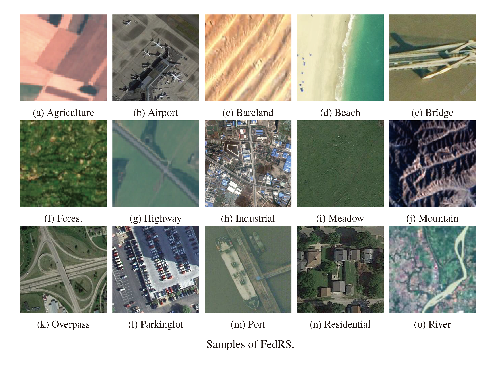

FedRS-Bench: Realistic Federated Learning Datasets and Benchmarks in Remote Sensing
Remote sensing (RS) images are usually produced at an unprecedented scale, yet they are geographically and institutionally distributed, making centralized model training challenging due to data-sharing restrictions and privacy concerns. Federated learning (FL) offers a solution by enabling collaborative model training across decentralized RS data sources without exposing raw data. However, there lacks a realistic federated dataset and benchmark in RS. Prior works typically rely on manually partitioned single dataset, which fail to capture the heterogeneity and scale of real-world RS data, and often use inconsistent experimental setups, hindering fair comparison. To address this gap, we propose a realistic federated RS dataset, termed FedRS. FedRS consists of eight datasets that cover various sensors and resolutions and builds 135 clients, which is representative of realistic operational scenarios. Data for each client come from the same source, exhibiting authentic federated properties such as skewed label distributions, imbalanced client data volumes, and domain heterogeneity across clients. These characteristics reflect practical challenges in federated RS (e.g. hundreds of ground stations or satellites each observing different locales) and support evaluation of FL methods at scale. Based on FedRS, we implement 10 baseline FL algorithms and evaluation metrics to construct the comprehensive FedRS-Bench. The experimental results demonstrate that FL can consistently improve model performance over training on isolated data silos, while revealing performance trade-offs of different methods under varying client heterogeneity and availability conditions. We hope FedRS-Bench will accelerate research on large-scale, realistic FL in RS by providing a standardized, rich testbed and facilitating fair comparisons across future works.
Overview
Data Source and Label Mapping of FedRS

Samples of FedRS
Accuracy curves of FedRS-Bench

Contact
If you have any questions or feedback, please contact us at zhaohaodong@sjtu.edu.cn.